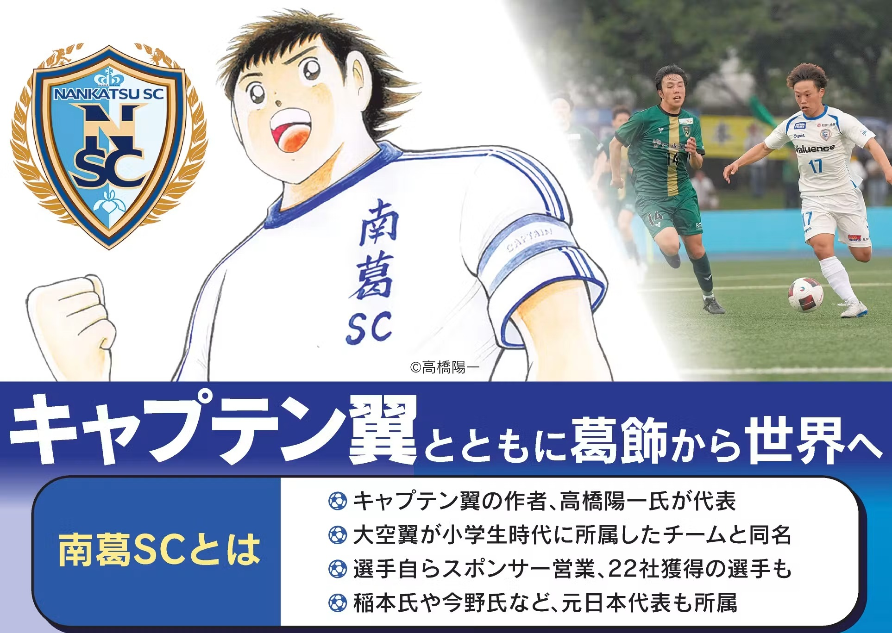
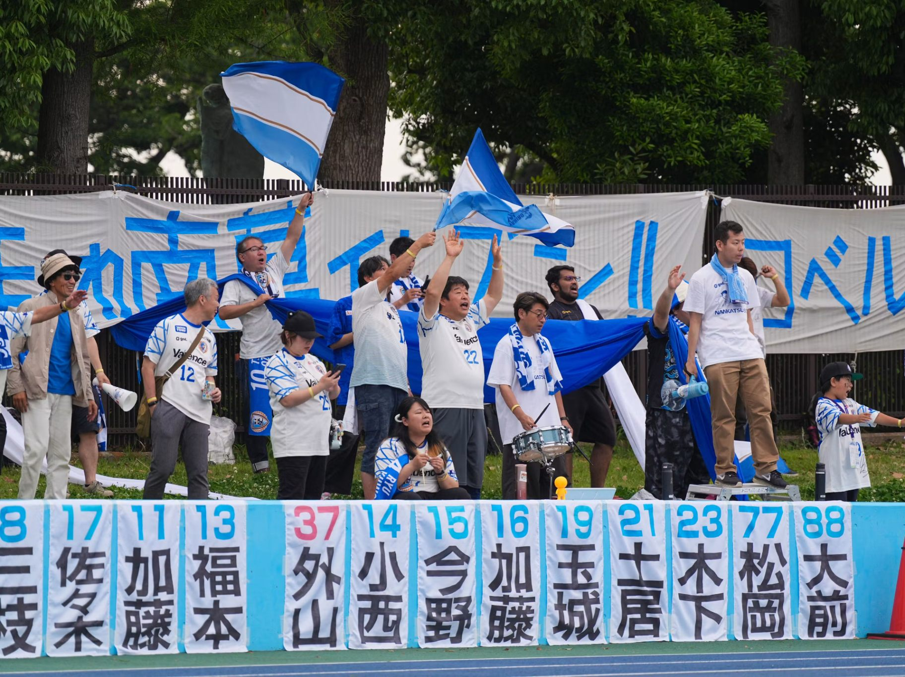
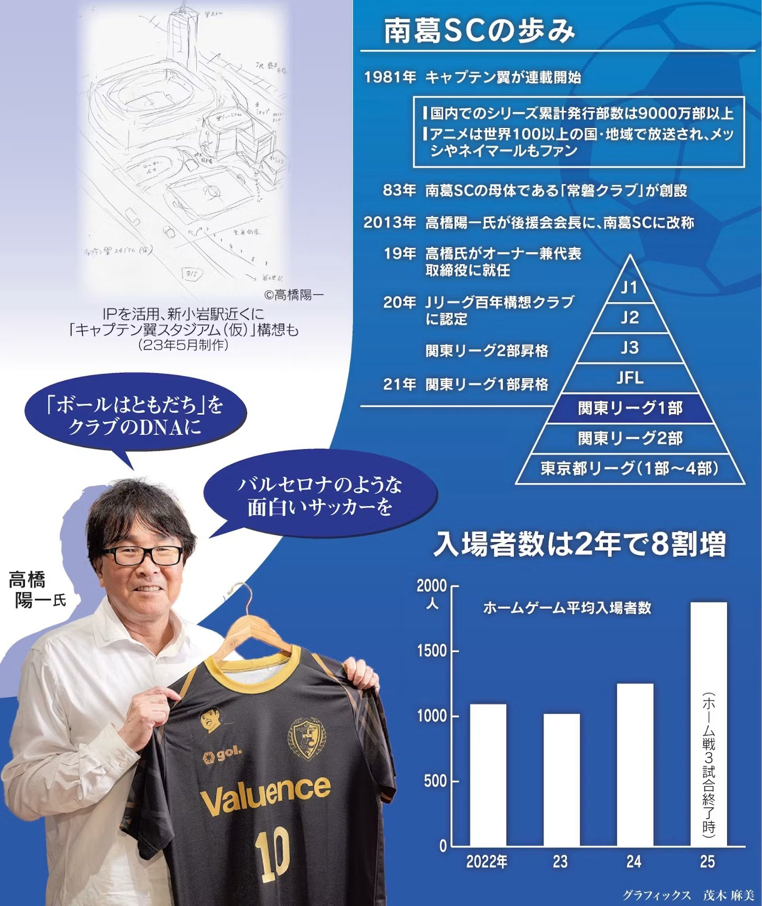
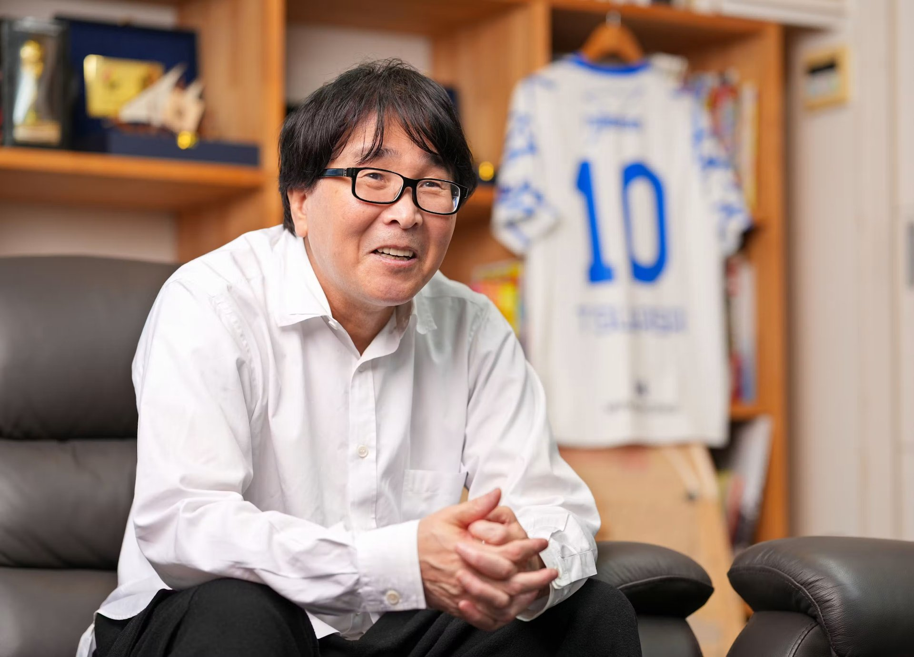

5 月 18 日，在东京葛饰区的奥户综合体育中心田径场，举行了关东足球甲级联赛南葛SC对阵 VONDS 市原FC 的比赛。尽管是南葛SC的主场作战，且草坪席 1100 日元、看台 S 自由席 2200 日元均为收费，仍吸引了 1828 名观众。
观众数超过 J3 下游
关东足球甲级联赛是从上往下数第 5 级别，但在 2025 赛季，南葛SC 的场均观众达 1875 人，甚至超过了职业 J3 联赛下游球队。家住葛饰的 8 岁男孩菅井湊说：「看了南葛SC 的比赛，我喜欢上足球了！」他原本对足球不太感兴趣，看到传单后去看了主场比赛。以家庭观众为主的球迷层正在扩大。

谈到南葛SC，绕不开俱乐部老板——也就是《队长小翼》作者、漫画家高桥阳一。南葛SC 本就是与主人公大空翼小学时所属球队同名的队伍。高桥于 2013 年就任后援会长时将其改名，2019 年成为老板兼代表董事。
「我想要一支能去支持的本地球队」——高桥如此说明担任老板的动机。他的家乡葛饰区正开展以《队长小翼》为题材的地域振兴，出车站就能看到主人公大空翼的画像，街头的角色铜像也吸引众多游客。尽管如此，包括葛饰在内的东东京仍是 J 联赛俱乐部的空白地带。东京都内有 FC 东京和东京绿茵，但主场都在西东京。「希望成为一支能得到当地民众支持、带动东东京发展的球队」，他下定决心亲自出马。秉承《队长小翼》「球是朋友」的理念，他追求以细腻传控为核心的配合型足球。
累计发行超 9000 万册的强劲 IP（知识产权）被充分运用到经营中。主营口腔护理的 Cladence Japan（东京台东区）于 2024 年与南葛SC 签订官方俱乐部合作伙伴协议，推出以大空翼的对手日向小次郎为包装的电动牙刷。「能与扎根当地的文化角色共同创作，是我们的优势，」Cladence Japan 的田中武彦表示。他们还利用高桥的亲笔插画制作促销物料，用于牙科行业活动与门店推广。
强劲 IP 在招揽人才上也威力巨大。球队请来曾执教川崎前锋、名古屋鲸鱼的風間八宏担任教练，前日本国脚稻本润一、今野泰幸也加入。稻本虽于 2024 年退役，但「南葛」之名已响彻全国。
扎根当地吸引客流
除角色与知名 IP 这些「撒手锏」外，扎根当地的模式也支撑着人气。「在娱乐丰富的东京，光靠足球本身留不住人，人们需要的是能与家人共享的体验价值，」宣传部部长天野春果说。曾在 J1 川崎前锋负责地域交流的她，组织与当地力士的开幕活动、与本地卡车零件商 Jet Inoue（东京葛饰）的装饰卡车展示等，以比赛为起点构建与球迷的接触点。开头提到的湊君母亲绫也说：「起初只是陪他去，现在连客场和女足比赛都去看了。」
俱乐部运营上也有独特举措。设立「球员员工制度」，由球员以俱乐部员工身份承担销售。上午训练，下午拜访企业或电话推销，争取赞助合同。不依赖运营人员、由球员亲自跑业务，既拉近与企业的距离，也提高签约率。球员们还通过当地清扫活动等与社区交流，以扎根当地的方式获取赞助。这一制度的操盘手是创办足球专业媒体《足球之王》的总经理岩本义弘，他基于见证众多 J 联赛球员退役的经验表示：「想从现役时期起，就营造能培养社会生存力的环境。」
获得约 1 亿日元赞助
球员员工制度始于 2020 年，最初 3 人，到 2022 年扩大到 21 人，单年获得约 1 亿日元赞助收入。球员月薪基准约 25 万日元，属高水平，工资每季度根据销售业绩、地域活动贡献度、电脑技能等量化指标重新评估。「运动员目标越明确越容易行动，量化评价制度促使行动、也促进成长，」岩本说。还引入「选手个人合作伙伴」制度，由选手自拓赞助企业、赞助费成为其收入，企业标识印在训练服上。2022 年加入的柳裕元拥有 22 家个人赞助商。
球场构想也在推进。葛饰区 2024 年春取得 JR 总武线新小岩站附近用地，南葛SC 与区里合作，目标建设专用足球场，预计容纳约 1.5 万人、使用天然草皮，所有看台设顶棚。若实现，将成为东京 23 区内首座符合 J1 标准的专用足球场。

另一方面，加盟 J 联赛之路并非坦途。南葛SC 目前隶属关东甲级联赛，要加盟 J 联赛还需升两级。眼下目标是升入 JFL（日本足球联赛），但岩本称「这里是最难啃的关口」——升入 JFL 须从各地区联赛冠军汇聚的「全国地域足球冠军联赛」中突围。
南葛SC 的足迹，正超越单纯的体育俱乐部，逐渐成为连接地域、企业与球迷的「粘合剂」。从站上 J 联赛舞台、到称霸亚洲的那一天，这个发端于葛饰的故事仍将继续。
高桥阳一专访

他是全球人气足球漫画《队长小翼》的作者，也是南葛SC 的老板——高桥阳一。他将虚构世界里的「南葛」带进现实，至今已超过 10 年。对于这家独一无二的扎根当地型俱乐部，他描绘着怎样的未来蓝图？我们采访了高桥先生。
——您为何开始参与俱乐部经营？

「东东京原本没有 J 联赛球队。我一直希望能有一支本地可以支持的球队，正好机会降临。我们正致力于打造一支让当地民众每个周末都能开心加油的足球队。」
——目前的成效如何？
「我感觉到现实并不像漫画那样顺利。本以为 10 年能升到 J3 左右呢。」
「发生各种事情，很有趣。没想到稻本先生会加入、风间先生会出任教练。在葛饰这座城里，有这样的人物在活动，简直像做梦一样。」
——现在的目标是什么？
「首先是要升入 JFL。这里最难，所以想设法突破。终极目标是成为俱乐部世界第一。不知是几年后、几十年后，但我希望在俱乐部世界杯上夺冠。」
「升级的那一刻很开心，没升上去时果然还是懊悔。观众起初少得数得过来，但渐渐多了起来。希望今后大家能一起享受这段不断升级的故事。」
——2024 年春季葛饰区取得了用于球场的用地。
「想建成专用足球场，让大家能更近距离地享受比赛。还希望附设《队长小将》博物馆之类，让这里在没有比赛的日子里也能成为观光和地域交流的中心。」
——您希望打造怎样的球场？
「国内以长崎、广岛的专用足球场为理想。海外的话，理想是（西班牙巴塞罗那的）诺坎普。看台陡峭、视野极佳。日本虽有建筑标准限制，但我还是想建一座视野好的球场。」
——在采访世界各地俱乐部后，理想的俱乐部运营是？
「是德国的云达不来梅。1980 年代，在日本还没有职业足球俱乐部时我去采访过，觉得拥有一百多年历史的职业联赛俱乐部才是理想。不仅有一线队，青训年龄段和其他项目也一贯运营，这套体系令人赞叹。」
——您也着力于面向儿童的活动。
「孩子们感受性最强，希望他们能享受这些活动。将来长大了，能成为支持南葛SC 的球迷就好了。」
——听说还有把理念扩展到足球以外项目的构想。
「将来是考虑过的。南葛SC 的『SC』不是 『Soccer Club（足球俱乐部）』，而是『Sports Club（体育俱乐部）』的缩写。希望将来培育成一支支撑篮球、五人制足球以及地域多元体育的俱乐部。每个孩子各有天赋，我觉得小时候多接触不同项目很重要。」
——作为球队，最看重的是什么？
「我喜欢巴塞罗那，因为无论球员如何更迭，俱乐部作为整体都根植了（以传球为核心的）DNA，所以始终充满魅力。南葛SC 也希望把珍视皮球、彼此传接的『球是朋友』，作为球队的 DNA 根植下来。」
采访者：河野舜
采访出处：https://www.nikkei.com/article/DGXZQOUC295FJ0Z20C25A5000000/